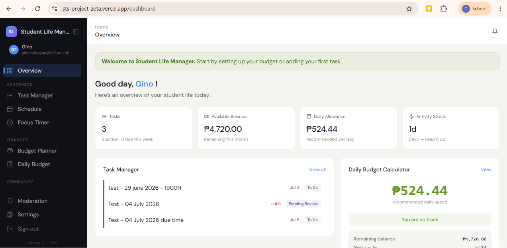

Student Life Manager website
Assisted in the development of this all-in-one website/companion for college students
(Full stack web application)
Task manager, budget tracker, and schedule planner in one dashboard, with an anonymous forum where
students can ask questions and share their experiences.
This project was
built for college students who are tired of juggling multiple apps to keep their student life together.
Tech used: React, Next.js, Supabase.
Team project, 6 members.